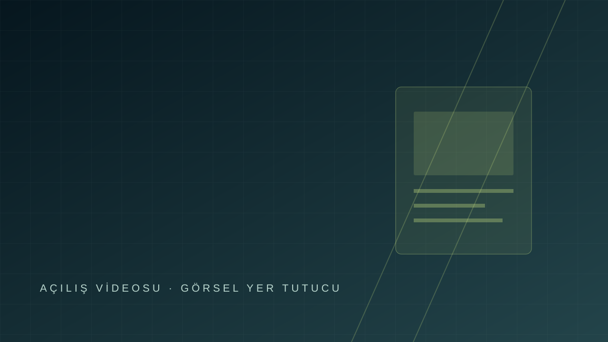

ETKİLEŞİMLİ · PROJE TASLAĞI
Yolculuk
burada başlıyor.
Örnek projeleri üç boyutlu bir sergi içinde keşfedin.
KAYDIRARAK İLERLEYİN
0103
DİJİTAL KOLEKSİYON
Projeler tramvayda buluşuyor.
Bu tarayıcıda üç boyutlu görünüm kullanılamıyor. Projeleri aşağıdaki duraklardan açabilirsiniz.
02 / 03 · TRAMVAY İÇİ SERGİ
Her durakta
yeni bir fikir.
Kaydırarak ilerleyin veya serbest gezintiye geçin. Görsellere tıklayıp projeyi inceleyin.
GÖRSELLERE TIKLAYIN · DURAKLAR ARASINDA KAYDIRIN
WASD: ilerle / yana geç · Fare: 360° bak · Esc: sunuma dön
ŞU ANKİ DURAK01 · Proje 01
03 / 03 · PROJE TASLAĞI
Birlikte,
yeni fikirleri
keşfedelim.
Başlık ve alt başlık alanı
0303